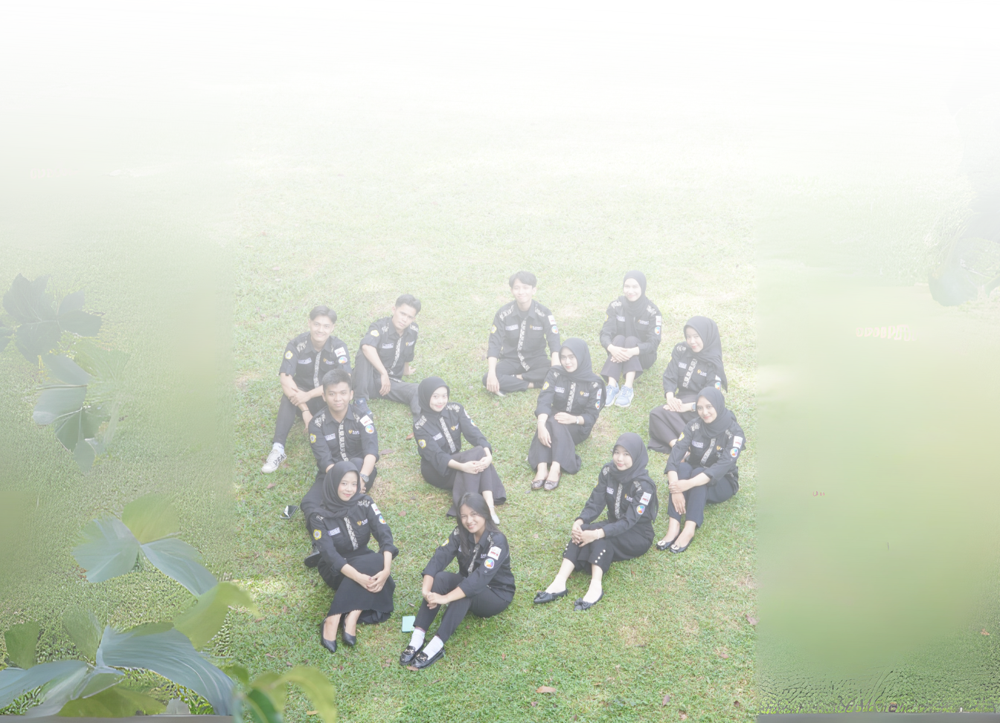

DEPARTEMEN
HUBUNGAN MAHASISWA
Departemen Humas berperan untuk Mengelola dan mengembangkan saluran komunikasi yang efektif antara BEM POLSRI dengan para pemangku kepentingan (internal dan eksternal), membangun citra publik yang positif, serta menerima dan menyampaikan informasi secara akurat dan tepat waktu.